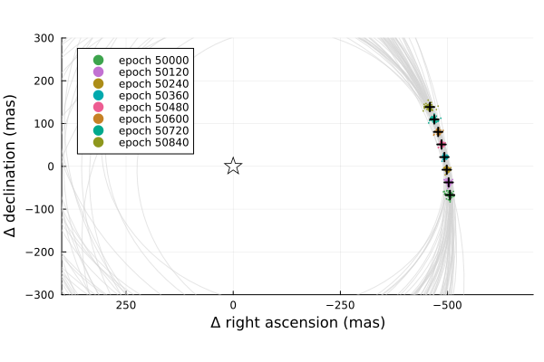

Posterior Predictive Checks
A posterior predictive check compares our true data with simulated data drawn from the posterior. This allows us to evaluate if the model is able to reproduce our observations appropriately. Samples drawn from the posterior predictive distribution should match the locations of the original data.
To demonstrate, we will fit a model to relative astrometry data:
using Octofitter
using Plots:Plots
using Distributions
astrom_like = PlanetRelAstromLikelihood(Table(;
epoch= [50000,50120,50240,50360,50480,50600,50720,50840,],
ra = [-505.764,-502.57,-498.209,-492.678,-485.977,-478.11,-469.08,-458.896,],
dec = [-66.9298,-37.4722,-7.92755,21.6356, 51.1472, 80.5359, 109.729, 138.651,],
σ_ra = fill(10.0, 8),
σ_dec = fill(10.0, 8),
cor = fill(0.0, 8)
))
@planet b Visual{KepOrbit} begin
a ~ truncated(Normal(10, 4), lower=0, upper=100)
e ~ Uniform(0.0, 0.5)
i ~ Sine()
ω ~ UniformCircular()
Ω ~ UniformCircular()
θ ~ UniformCircular()
tp = θ_at_epoch_to_tperi(system,b,50420) # reference epoch for θ. Choose an MJD date near your data.
end astrom_like
@system Tutoria begin
M ~ truncated(Normal(1.2, 0.1), lower=0)
plx ~ truncated(Normal(50.0, 0.02), lower=0)
end b
model = Octofitter.LogDensityModel(Tutoria)
using Random
Random.seed!(0)
chain = octofit(model)Chains MCMC chain (1000×28×1 Array{Float64, 3}):
Iterations = 1:1:1000
Number of chains = 1
Samples per chain = 1000
Wall duration = 7.84 seconds
Compute duration = 7.84 seconds
parameters = M, plx, b_a, b_e, b_i, b_ωy, b_ωx, b_Ωy, b_Ωx, b_θy, b_θx, b_ω, b_Ω, b_θ, b_tp
internals = n_steps, is_accept, acceptance_rate, hamiltonian_energy, hamiltonian_energy_error, max_hamiltonian_energy_error, tree_depth, numerical_error, step_size, nom_step_size, is_adapt, loglike, logpost, tree_depth, numerical_error
Summary Statistics
parameters mean std mcse ess_bulk ess_tail rh ⋯
Symbol Float64 Float64 Float64 Float64 Float64 Float ⋯
M 1.1833 0.0959 0.0042 522.0667 540.9154 1.00 ⋯
plx 50.0003 0.0197 0.0006 991.4917 507.9373 0.99 ⋯
b_a 11.9201 2.2107 0.1538 211.8314 581.8028 1.00 ⋯
b_e 0.1529 0.1100 0.0059 316.1664 442.2797 0.99 ⋯
b_i 0.6503 0.1474 0.0088 301.9988 293.8121 1.00 ⋯
b_ωy 0.1000 0.7368 0.0635 162.3535 607.5537 1.00 ⋯
b_ωx 0.0749 0.6666 0.0610 132.5110 460.6052 1.00 ⋯
b_Ωy 0.0192 0.7498 0.1028 60.1911 233.0736 1.00 ⋯
b_Ωx -0.0084 0.6617 0.0828 72.3806 294.7192 1.00 ⋯
b_θy 0.0738 0.0073 0.0003 709.8192 730.2083 1.00 ⋯
b_θx -0.9985 0.0199 0.0007 912.4548 710.8617 0.99 ⋯
b_ω -0.0019 1.7260 0.1358 199.2655 365.7615 1.00 ⋯
b_Ω -0.4870 1.7522 0.2028 92.1881 244.1262 1.00 ⋯
b_θ -1.4970 0.0073 0.0003 672.1737 708.4912 1.00 ⋯
b_tp 42684.4660 5167.9377 340.5706 231.1143 386.0399 1.00 ⋯
2 columns omitted
Quantiles
parameters 2.5% 25.0% 50.0% 75.0% 97.5%
Symbol Float64 Float64 Float64 Float64 Float64
M 1.0080 1.1180 1.1819 1.2505 1.3731
plx 49.9602 49.9867 50.0006 50.0145 50.0364
b_a 8.4357 10.2626 11.6425 13.2438 16.6699
b_e 0.0070 0.0610 0.1336 0.2247 0.3953
b_i 0.3354 0.5578 0.6665 0.7564 0.8976
b_ωy -0.9919 -0.6763 0.2643 0.8390 1.0080
b_ωx -0.9981 -0.5631 0.1742 0.6902 0.9966
b_Ωy -0.9950 -0.7840 0.0525 0.8057 0.9962
b_Ωx -0.9936 -0.6137 0.0103 0.5956 0.9984
b_θy 0.0595 0.0690 0.0737 0.0788 0.0878
b_θx -1.0381 -1.0123 -0.9979 -0.9853 -0.9605
b_ω -2.9659 -1.5068 0.2789 1.1693 2.9670
b_Ω -2.9655 -2.2688 0.0128 0.8231 2.9088
b_θ -1.5115 -1.5020 -1.4971 -1.4920 -1.4830
b_tp 30877.1265 39407.3102 43483.3562 46639.2495 49918.5866
We now have our posterior as approximated by the MCMC chain. Convert these posterior samples into orbit objects:
# Instead of creating orbit objects for all rows in the chain, just pick
# every twentieth row.
ii = 1:20:1000
orbits = Octofitter.construct_elements(chain, :b, ii)50-element Vector{Visual{KepOrbit{Float64}, Float64}}:
Visual{KepOrbit{Float64}, Float64}(KepOrbit(10.9, 0.129, 0.684, -1.93, 3.6, 44300.0, 1.21), 49.99160840367902, 4.1259924732651813e6)
Visual{KepOrbit{Float64}, Float64}(KepOrbit(12.9, 0.229, 0.833, 0.211, 4.64, 50400.0, 1.41), 50.00620464056703, 4.124788143443096e6)
Visual{KepOrbit{Float64}, Float64}(KepOrbit(10.8, 0.0964, 0.685, -1.24, 4.13, 47000.0, 1.24), 49.971251133197846, 4.1276733186087897e6)
Visual{KepOrbit{Float64}, Float64}(KepOrbit(14.6, 0.0492, 0.796, 2.71, 3.27, 34400.0, 1.1), 50.01327330942985, 4.1242051629743935e6)
Visual{KepOrbit{Float64}, Float64}(KepOrbit(13.2, 0.0829, 0.828, -1.41, 3.46, 43900.0, 1.39), 50.01093626020028, 4.124397890230059e6)
Visual{KepOrbit{Float64}, Float64}(KepOrbit(10.6, 0.0808, 0.629, 0.98, 4.64, 40100.0, 1.17), 49.99105906441326, 4.126037812766248e6)
Visual{KepOrbit{Float64}, Float64}(KepOrbit(15.5, 0.143, 0.855, 0.462, 3.72, 48600.0, 1.24), 50.01054545203968, 4.1244301203994867e6)
Visual{KepOrbit{Float64}, Float64}(KepOrbit(13.0, 0.0129, 0.766, -0.329, 3.63, 46500.0, 1.15), 50.042002620487885, 4.121837440525457e6)
Visual{KepOrbit{Float64}, Float64}(KepOrbit(12.3, 0.0193, 0.695, -0.553, 0.517, 38900.0, 1.18), 50.01265540608288, 4.1242561172809205e6)
Visual{KepOrbit{Float64}, Float64}(KepOrbit(13.4, 0.00981, 0.785, 1.62, 0.385, 43100.0, 1.27), 50.01274002536434, 4.124249139227148e6)
⋮
Visual{KepOrbit{Float64}, Float64}(KepOrbit(10.6, 0.0124, 0.681, 2.55, 1.15, 48400.0, 1.34), 49.9865616721975, 4.126409040746735e6)
Visual{KepOrbit{Float64}, Float64}(KepOrbit(11.1, 0.106, 0.666, -1.29, 3.68, 45700.0, 1.12), 50.00483053400293, 4.124901490461832e6)
Visual{KepOrbit{Float64}, Float64}(KepOrbit(15.2, 0.147, 0.817, 2.81, 3.29, 33100.0, 1.1), 49.983738187566196, 4.126642133607163e6)
Visual{KepOrbit{Float64}, Float64}(KepOrbit(15.3, 0.0676, 0.87, 2.81, 3.38, 35400.0, 1.36), 49.998368136458254, 4.1254346429277533e6)
Visual{KepOrbit{Float64}, Float64}(KepOrbit(10.8, 0.169, 0.726, 1.84, 0.731, 46500.0, 1.21), 50.012151728427085, 4.1242976530993413e6)
Visual{KepOrbit{Float64}, Float64}(KepOrbit(10.5, 0.144, 0.562, -2.52, 3.44, 42600.0, 1.08), 50.01780861522872, 4.123831205535849e6)
Visual{KepOrbit{Float64}, Float64}(KepOrbit(11.8, 0.33, 0.602, -2.23, 2.2, 38900.0, 1.23), 50.00517052636756, 4.124873444661831e6)
Visual{KepOrbit{Float64}, Float64}(KepOrbit(11.8, 0.15, 0.728, 2.34, 0.689, 46900.0, 1.17), 49.985818540057075, 4.126470387490117e6)
Visual{KepOrbit{Float64}, Float64}(KepOrbit(8.55, 0.256, 0.51, 0.824, 0.779, 45900.0, 1.15), 50.02398566853842, 4.1233219873107034e6)Calculate and plot the location the planet would be at each observation epoch:
epochs = astrom_like.table.epoch' # transpose
x = raoff.(orbits, epochs)
y = decoff.(orbits, epochs)
Plots.plot(orbits, kind=(:raoff, :decoff), color=:lightgrey)
Plots.scatter!(
x, y,
lims=:symmetric,
markerstrokewidth=0,
markersize=1,
legend=:topleft,
label=["epoch $i" for i in epochs]
)
Plots.plot!(astrom_like, linewidth=2, color=:black, label="observed")
Plots.scatter!([0],[0], marker=(:star,:black, :white, 10),label="")
Plots.xlims!(-700,400)
Plots.ylims!(-300,300)
Looks like a great match to the data! Notice how the uncertainty around the middle point is lower than the ends. That's because the orbit's posterior location at that epoch is also constrained by the surrounding data points. We can know the location of the planet in hindsight better than we could measure it!
You can follow this same procedure for any kind of data modelled with Octofitter.